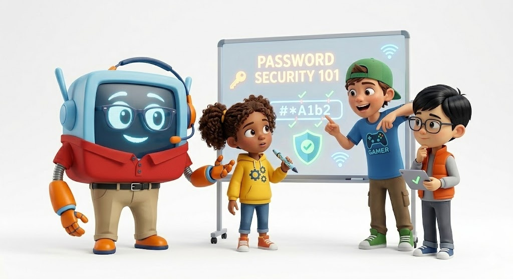

Stop before clicking links, pop-ups, downloads, or strange messages.
🛡️ Kid Tech Safety
🤖 AI Awareness
🔎 Scam Spotting
Pause.
Ask why.
Stay safe.
Meet T-Why The IT Guy, a friendly robot guide who turns online safety into quick videos, colorful missions, and simple habits kids can remember.
The goal is simple: help kids build smart digital instincts before they click, download, share, or believe something online. Every lesson is designed to be short, visual, repeatable, and easy for grown-ups to reinforce.
The 3 Rules
Kids remember patterns. T-Why repeats the same simple safety loop across every episode so the lesson sticks.
Look for clues: Who sent it? What do they want? Does it feel rushed?
When something feels weird, confusing, scary, or too good to be true, ask for help.
Watch T-Why
The page starts with movement because kids engage faster when the character is visible, the goal is obvious, and the next action is simple.
Launch idea: one safety topic, one funny mistake, one habit kids can repeat.
Today’s Mission
Help T-Why spot risky tech moments before they become problems.
- Spot a suspicious link.
- Build a stronger password habit.
- Practice asking a grown-up before sharing personal info.
Mission Zones
Each topic is built as a short, colorful card so kids can understand the promise quickly and choose what they want to learn next.

🔐
Password Power
Learn why short passwords are easy to guess and how password phrases can help.

📶
Wi‑Fi Wisdom
Understand why public Wi‑Fi needs extra caution and when to ask for help.
🕵️
Scam Scanner
Look for urgency, strange links, spelling clues, fake prizes, and pressure tricks.
🤖
AI Awareness
Learn that AI can help, but it can also be wrong, fake, or used to trick people.
🙈
Privacy Power
Know what not to share online: address, school, passwords, location, or private details.
💬
Kind Clicks
Practice safe, kind choices in chats, games, comments, and online communities.
T-Why Safety Quest
A simple checklist gives kids a quick win. It also gives parents or teachers an easy way to turn a video into a short activity.
Complete the mission
Check off each habit after you practice it with a grown-up.
Launch Episodes
The first season should stay intentional: one problem, one story, one takeaway, one action. No random uploads.
Don’t Click That!
T-Why spots a fake prize link and teaches the pause rule.
Password Superpower
Kids learn why “123456” is not a secret fortress.
AI Can Be Wrong
T-Why shows why smart tools still need smart humans.
Public Wi‑Fi Warning
A simple lesson on asking before connecting in public places.
For Grown-ups
T-Why is designed for quick, family-safe lessons that can become repeatable habits at home, in classrooms, or in community programs.
Why the layout is built this way
Kids need fast visual hooks, clear choices, repetition, progress cues, and short missions. This page keeps the mascot visible, uses bright color blocks, and turns lessons into small actions.
Safety promise
This standalone page does not collect children’s information. It is built as a launch site for videos, lessons, and activities that teach safer digital habits.